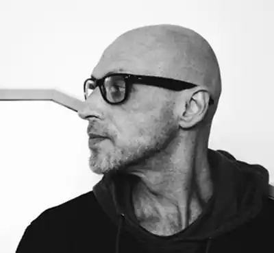

Юрій Іздрик (16 серпня 1962, Калуш) — український прозаїк, поет, культуролог, автор концептуального журнального проекту "Четвер". Один із творців станіславського феномену.
Юрко Іздрик народився в м. Калуш на Івано-Франківщині. В школі вчився на відмінно, любив математику, грав у шкільному ансамблі, тоді ж почав цікавитися літературою. Закінчив музичну школу по класу віолончелі та фортепіано, самотужки опанував гру на гітарі та мандоліні.
По закінченні школи вступив на навчання у Львівський політехнічний інститут. У студентські роки вивчав історію мистецтва, відвідував публічні лекції з мистецтвознавства, грав у рок-гурті, брав участь у постановках самодіяльного студентського театру. Після університету почав працювати інженером на Івано-Франківському заводі автоматизованих ливарних машин (1984–1986), згодом — у Калуському науково-дослідному інституті галургії (1986–1990). У 1989 р. розпочалася історія легендарного журналу — "Четвер". Перші два номери були самвидавними. У 1990 р. Юрко запропонував Андруховичу разом випускати "Четвер", на що той одразу ж погодився. Кілька років митці працювали над журналом разом. Дружні стосунки Ю.Андрухович та Ю.Іздрик підтримують до сьогодні. Перші твори Іздрика з'явилися друком у самвидавних випусках журналів "Четвер" та "Відрижка" (Польща). Після появи перших творів дехто з критиків вважав, що "Іздрик — це фікція, псевдонім Андруховича". Це й не дивно, адже у деяких творах Іздрика, Андруховича, а також Прохаська перегукуються певні сюжети, герої та навіть фрази, що й об'єднує та вирізняє творців "станіславського феномену" своєю оригінальністю. Після літературного дебюту митець ненадовго перериває письменницьку творчість. Окрім редакції "Четверга", Іздрик починає активно займатися малярством (1990–1994). Про це свідчить участь у численних художніх виставках. Роботи Іздрика-художника користувалися популярністю й зараз знаходяться в приватних колекціях та галереях України, Польщі, Німеччини, Австрії, Іспанії, США, Таїланду. У 1994 році митець остаточно повертається до літературної творчості та діяльності. Співпрацює з газетою "День", продовжує редагувати "Четвер", займається музикою. Справжнім злетом у літературній творчості Юрка Іздрика став роман "Воццек" (1998). Читачі настільки захопились "книгою про сни у снах" (В.Габор), що перший тираж книги, виданий в Івано-Франківську, був розпроданий за тиждень. Вже другий рік поспіль Ю.Іздрик займається спільним музичним проектом з поетом та музикантом Григорієм Семенчуком "DrumТИатр". Зараз живе і працює у Калуші. Автор повісті "Острів Крк" (1994), поетичної збірки "Станіслав і 11 його визволителів" (1996), романів "Воццек" (1996, 1997), "Подвійний Леон" (2000) і "АМтм" (2004), збірки есеїв "Флешка" (2007), "Таке" (2009), "Underwor(l)d" (2011), "Іздрик. Ю" (2013), низки повістей, оповідань, статей з культурології та літературознавства.